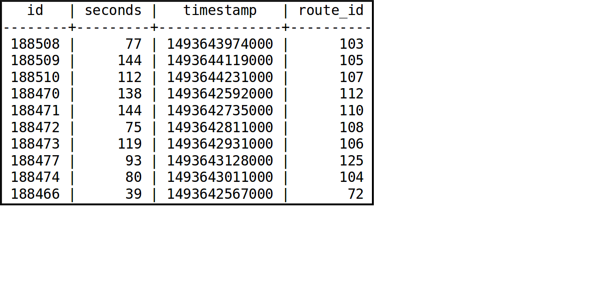
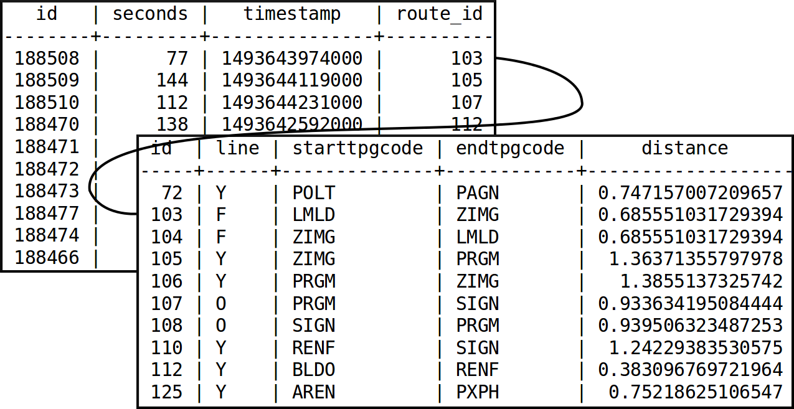
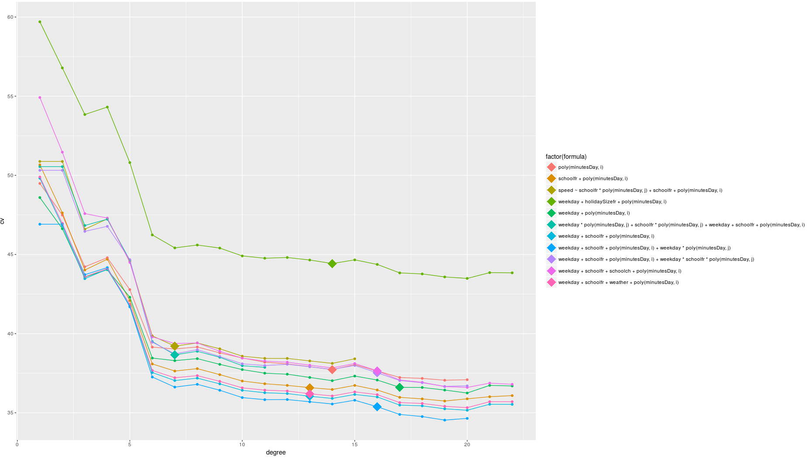
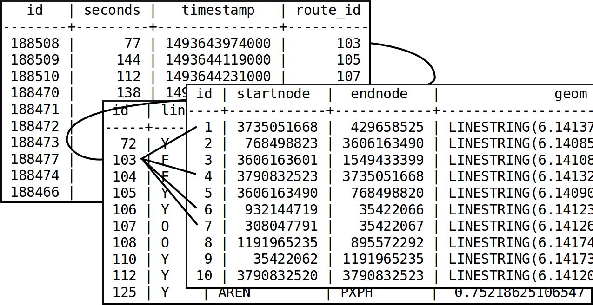

Fernando González Cortés
fernando.gonzalez@geomati.co
4am: /GetAllNextDepartures.xml
<?xml version="1.0" encoding="UTF-8"?> <nextDepartures> <timestamp>2017-10-20T04:12:09+0200</timestamp> <stop> <stopCode>VATH</stopCode> <stopName>Val-Thoiry</stopName> </stop> <departures> <departure> <departureCode>216940</departureCode> <timestamp>2017-10-20T06:30:09+0200</timestamp> <reliability>T</reliability> </departure> <departure> <departureCode>216806</departureCode> <timestamp>2017-10-20T06:50:09+0200</timestamp> <reliability>F</reliability> </departure> <departure> <departureCode>217160</departureCode> <timestamp>2017-10-20T07:10:09+0200</timestamp> <reliability>T</reliability> </departure> </departures> </nextDepartures>
6.30am: /GetThermometer.xml
<?xml version="1.0" encoding="UTF-8" standalone="yes"?> <thermometer> <timestamp>2017-10-20T04:12:21+0200</timestamp> <stop> <stopCode>VATH</stopCode> <stopName>Val-Thoiry</stopName> </stop> <lineCode>Y</lineCode> <destinationName>Ferney-Voltaire</destinationName> <destinationCode>FERNEY-VOLTAIRE</destinationCode> <steps> <step> <departureCode>216940</departureCode> <timestamp>2017-10-20T06:30:00+0200</timestamp> <stop> <stopCode>VATH</stopCode> <stopName>Val-Thoiry</stopName> </stop> </step> <step> <departureCode>216941</departureCode> <timestamp>2017-10-20T06:32:56+0200</timestamp> <stop> <stopCode>THGA</stopCode> <stopName>Thoiry-Gare</stopName> </stop> </step> <step> <departureCode>216942</departureCode> <timestamp>2017-10-20T06:34:20+0200</timestamp> <stop> ...
Store event in Shift table:

TPGStopRoute:

Model selection:
- ✓ Linear regression
- ✓ Polynomial regression
- ✗ Time series
- ✗ K-Nearest neighbours
speed = β₁·weekday + β₂·schoolfr + β₃·minutesDay^16 + β₄·weekday·minutesDay
Model generation
- For each segment in the network:
- Prepare the data: filter errors out, calculate speed, generate variables: school in france, day of the week, etc.
- Make R build a model
glm(data = speeds, speed ~ weekday + schoolfr + poly(minutesDay, 16) + weekday * minutesDay) - Store the model in the database
Forecast generation
- Each 15 minutes:
- for each segment in the network:
- Get the model from the database
- Gather the current variables: weekday, school, etc.
- Make R produce a forecast
predict.glm(model, newdata = forecastDataset)
- Store the forecast in the database
- for each segment in the network:
Forecasted speeds
geom | id | draw_timestamp | speed
-----------------------+------+------------------------+--------
LINESTRING(6.14137... | 8133 | 2017-10-20 15:15:00+00 | 9
LINESTRING(6.14085... | 8215 | 2017-10-20 17:15:00+00 | 10
LINESTRING(6.14108... | 8210 | 2017-10-20 16:00:00+00 | 9
LINESTRING(6.14132... | 8170 | 2017-10-21 05:45:00+00 | 12
LINESTRING(6.14090... | 8205 | 2017-10-20 14:45:00+00 | 9
LINESTRING(6.14123... | 8154 | 2017-10-20 20:30:00+00 | 10
LINESTRING(6.14126... | 8132 | 2017-10-20 15:15:00+00 | 9
LINESTRING(6.14174... | 8126 | 2017-10-20 13:30:00+00 | 10
LINESTRING(6.14173... | 8196 | 2017-10-21 12:15:00+00 | 12
LINESTRING(6.14120... | 8144 | 2017-10-20 18:00:00+00 | 10
Performance considerations
- Model generation: ~2h
- Forecast generation: ~2m
Forecasted speeds
geom | id | draw_timestamp | speed
-----------------------+------+------------------------+--------
LINESTRING(6.14137... | 8133 | 2017-10-20 15:15:00+00 | 9
LINESTRING(6.14085... | 8215 | 2017-10-20 17:15:00+00 | 10
LINESTRING(6.14108... | 8210 | 2017-10-20 16:00:00+00 | 9
LINESTRING(6.14132... | 8170 | 2017-10-21 05:45:00+00 | 12
LINESTRING(6.14090... | 8205 | 2017-10-20 14:45:00+00 | 9
LINESTRING(6.14123... | 8154 | 2017-10-20 20:30:00+00 | 10
LINESTRING(6.14126... | 8132 | 2017-10-20 15:15:00+00 | 9
LINESTRING(6.14174... | 8126 | 2017-10-20 13:30:00+00 | 10
LINESTRING(6.14173... | 8196 | 2017-10-21 12:15:00+00 | 12
LINESTRING(6.14120... | 8144 | 2017-10-20 18:00:00+00 | 10
Gathered speeds: Shift
TPGStopRoute
OSMSegment

And...
Performance considerations
- Model generation: ~2h
- Forecast generation: ~2m
- Data transformation made with PostgreSQL materialized views: ~1m
- Study area
4000 OSM segments
x 96 timestamps
------
384000 records to draw
- Bidimensional data!
Thanks!
Slides --> http://fergonco.org/slides/foss4gbe17/
More details --> http://fergonco.org/blog.html